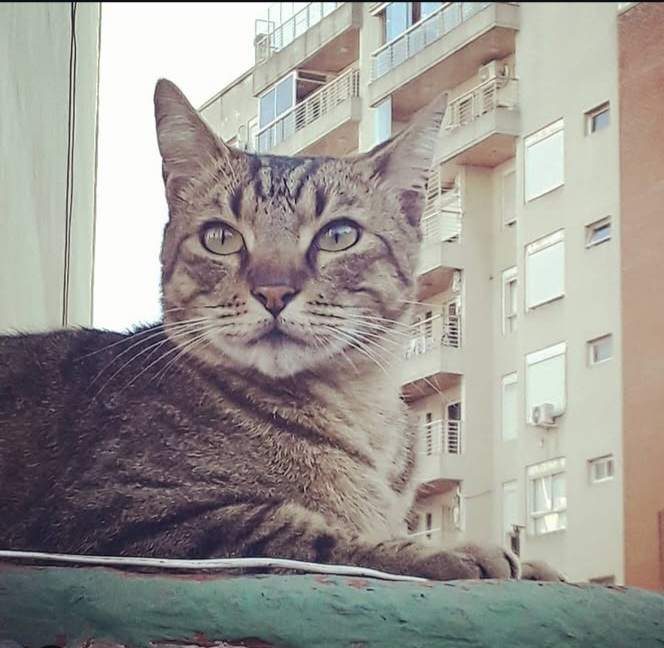
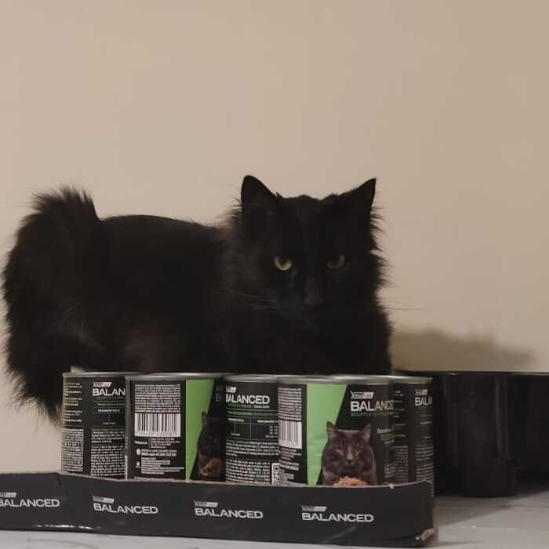
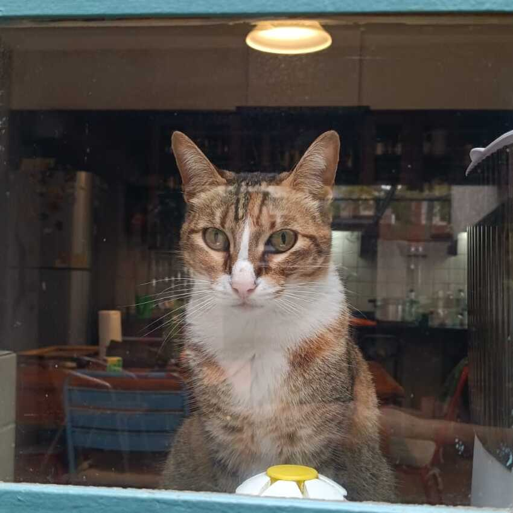

Somos el grupo 5 de Informática General cátedra Drelichman, conformado
por Fabrizio Cárdenas, Marcela Marcolini y Clara Fernández Rolón.
Esta es nuestra página, Juegazos, que cuenta con 3 juegos variados
para pasar el rato: Tenés el Cincuenta, un juego de dados donde el
objetivo es llegar a 50 puntos; PokeTrivia, un juego de preguntas y
respuestas sobre Pokémon; y el Infiltrado, un juego de cartas donde el
objetivo es sumar puntos para abrir la pecera.
Esperamos que disfruten de nuestros juegos y que se diviertan tanto
como nosotros al crearlos. ¡Gracias por visitarnos!

Soy Marcela, la creadora del Infiltrado, un juego de cartas que incluye travesuras de gatitos y misiones a cumplir. A los tres integrantes de este grupo nos gustan los gatitos así es que la temática surgió de manera simple. Estos primeros pasos en la creación de un juego han sido desafiantes y muy enriquecedores a la vez. Gracias por acompañarnos!!

Aquí va el texto de Fabri

Yo soy Clara, la creadora de la PokeTrivia. Elegí ese juego porque me interesó el tema de API's y me gusta mucho Pokemon, así que todo el proceso se me hizo bastante divertido, a pesar de que sí me costó. Estoy en mi primer año de la carrera de Artes Multimediales y me viene gustando mucho. Esta materia se me hace llevadera por mis conocimientos previos en programación, pero gracias a los profes refiné muchos de estos conocimientos y adquirí otros nuevos.